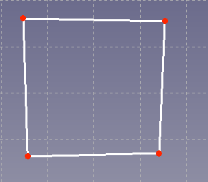
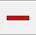
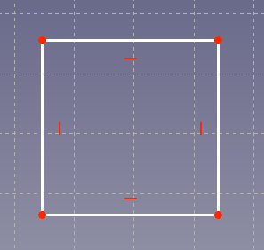
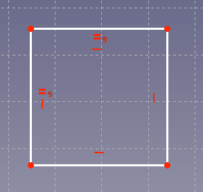
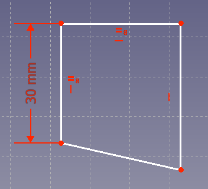

15. Croquis con restricciones¶
En esta práctica vamos a crear croquis con restricciones para formar figuras con mayor exactitud y con más facilidades.
Abrimos la aplicación FreeCAD y hacemos clic en el icono para crear un nuevo documento
 .
.Seleccionamos el banco de trabajo Part Design

A continuación seleccionamos crear un nuevo croquis.

Y elegimos el plano XY como plano base para situar el nuevo croquis.

En la pantalla aparecerá una rejilla donde poder dibujar en dos dimensiones.

A continuación vamos a dibujar un objeto sencillo, un cuadrado, con el icono polilínea
 .
.Ahora no vamos a preocuparnos de la exactitud del cuadrado porque dibujando con el ratón es imposible conseguir un cuadrado perfecto.
Con el método anterior, podemos crear un dibujo parecido a un cuadrado, pero al crear figuras con el ratón el resultado siempre tendrá errores.
Para conseguir que nuestro cuadrado sea perfecto vamos a crear restricciones en las líneas que lo forman.
Primero seleccionamos las dos líneas verticales y creamos una restricción vertical clicando .

Las líneas se volverán perfectamente verticales y aparecerán dos pequeños iconos que representan la restricción vertical.

A continuación seleccionamos las dos líneas horizontales para crear una restricción horizontal clicando .
Ahora nuestro dibujo se parece mucho más a un cuadrado perfecto, pero aún no hemos terminado.
En este punto vamos a hacer que un lado vertical tenga el mismo tamaño que un lado horizontal, como corresponde a un cuadrado.
Seleccionamos un lado vertical y un lado horizontal y creamos una restricción de igualdad clicando .
Ahora nuestra figura es un cuadrado perfecto. Si movemos un punto del cuadrado, este mantendrá las proporciones.

Para terminar vamos a dar un tamaño exacto al cuadrado. Primero seleccionamos una línea vertical y a continuación creamos una restricción de cota vertical clicando , con el valor de 30 milímetros.

Una vez creada la cota, podemos hacer doble clic sobre ella para editarla y cambiar su valor.
A continuación vamos a eliminar una restricción.
Clicamos sobre el icono de restricción horizontal en la línea inferior, este icono cambiará a color verde.

Presionamos la tecla de suprimir
Supren el teclado y la restricción desaparece, con lo que podremos mover la línea inferior y cambiar su inclinación.
Ejercicios¶
Crear un croquis como el de la imagen.

Con las siguientes restricciones.
- Restricción horizontal en todas las líneas horizontales.
- Restricción vertical en todas las líneas verticales.
- Restricción de igualdad en todas las líneas de igual longitud.
- Restricción de cota en las cuatro dimensiones que aparecen en el dibujo.
Extrudir el dibujo 100 milímetros para generar una viga en H.

Videotutorial¶
Vídeo: aplicando restricciones.